경로 계획 기초 · 개념 공부 덱
어디로, 어떻게 갈지
미리 정한다
그래프 탐색에서 샘플링, 궤적 최적화, 학습·생성형 Planner, VLA까지 — 그림과 배경지식과 장단점으로 보는 로봇 경로 계획
A* · Dijkstra
RRT · PRM
DWA · 궤적 최적화
학습 Planner
Diffusion · Flow
VLA · 위험
순서
고전 계획에서 생성형 Planner까지 여섯 갈래로 간다
| 장 | 주제 | 답하는 질문 |
|---|---|---|
| 0 | 시작 | 계획은 어느 층에서 무엇을 내나? 구성 공간과 costmap은? |
| 1 | 그래프 탐색과 샘플링 | A*는 왜 빠르고 언제 최적인가? 고차원에서는? |
| 2 | 로컬 계획과 궤적 최적화 | 움직이는 로봇의 한계를 어떻게 넣나? |
| 3 | 학습 Planner | 왜 배우고, 회귀는 어디서 실패하나? |
| 4 | 생성형 궤적 | diffusion·flow는 무엇을 더 주고, 누가 고르나? |
| 5 | 위층과 위험 | VLA와 규칙, 위험은 어디에 두나? |
| 6 | 정리 | 방법을 한 표로, 어떻게 평가하고 무엇부터 공부하나? |
0 · 커리큘럼 2/7
인식의 costmap을 받아 제어에 경로를 넘긴다
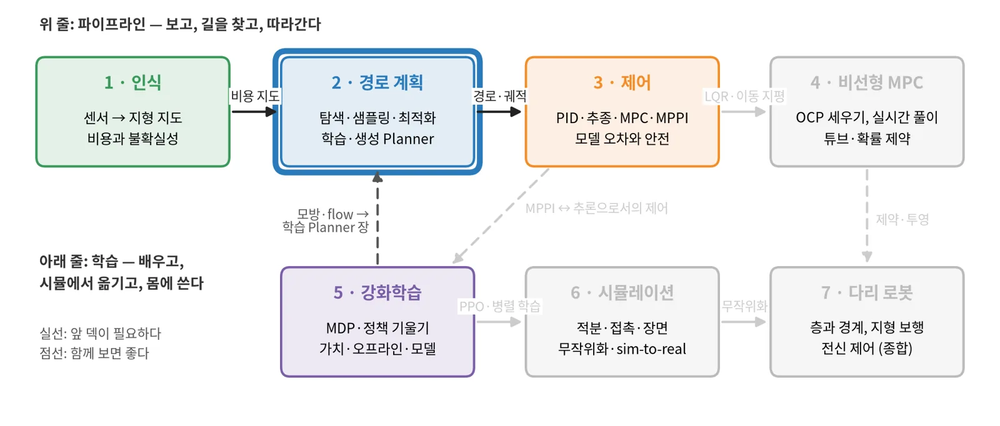
1 인식의 costmap과 못 본 칸. 그래프와 최단 경로의 기초.
경로·시간 궤적 → 3 제어가 추종한다. 궤적 최적화 → 4 비선형 MPC의 OCP.
3–4장(학습·생성 Planner)은 5 강화학습의 행동 복제·DAgger(1장)와 flow 정책(5장)을 배운 뒤 다시 보면 쉽다.
0 · 배경지식
네 가지 배경지식이면 이 덱을 따라올 수 있다
노드와 간선, 간선마다 비용
격자의 칸, 샘플링한 점, 로봇 자세가 노드가 된다. 경로 = 노드 열, 경로 비용 = 간선 비용의 합.
"좋은 경로"를 숫자 하나로
\(J = \sum (\text{길이} + w_1\,\text{위험} + w_2\,\text{불편함})\). 가중치가 성격을 정한다.
로봇 자세 전체가 한 점
바퀴 로봇은 \((x, y, \theta)\), 팔은 관절각 벡터. 장애물은 "로봇이 겹치는 자세"의 집합이 된다.
모든 경로를 따라갈 수는 없다
차는 옆으로 못 가고(비홀로노믹), 속도·가속·곡률에 한계가 있다.
0 · 계획의 층
계획은 느리고 멀리 보는 층과 빠르고 가까이 보는 층으로 나뉜다
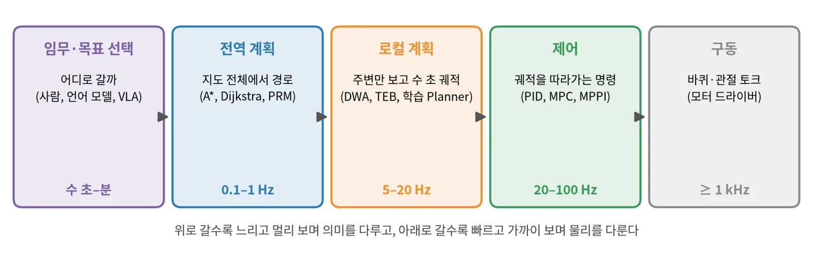
지도 전체로 경로를 낸다. 최적에 가깝지만 느리고, 지도에 없는 것은 모른다.
센서 범위 안에서 수 초 궤적을 낸다. 새 장애물에 반응하지만 막다른 곳에 갇힐 수 있다.
궤적을 따라가는 명령을 낸다. 계획이 틀려도 짧은 시간의 오차를 흡수한다.
0 · 구성 공간과 costmap
장애물을 로봇 크기만큼 부풀리면 로봇을 점으로 다룰 수 있다
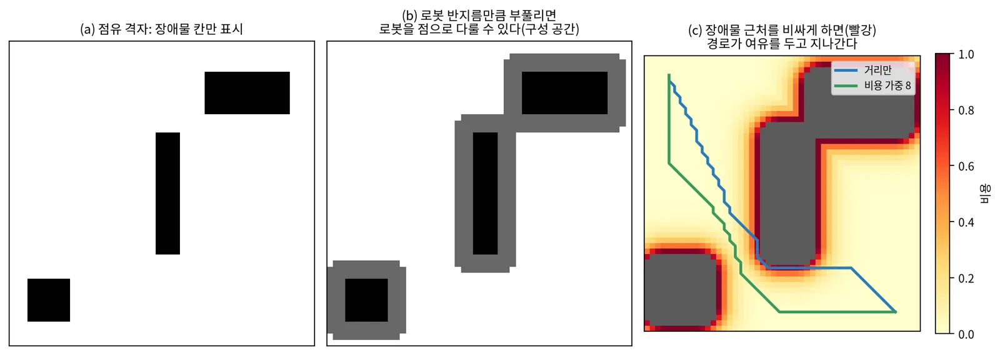
탐색 알고리즘이 로봇 모양을 몰라도 된다. 비용 층(occupancy, 경사, 거칠기, 불확실성)을 더해 성격을 바꾸기 쉽다.
원이 아닌 로봇은 방향마다 부풀림이 달라 \(\theta\)까지 다뤄야 한다. 가중치를 손으로 맞춰야 한다.
1 · 그래프 탐색과 샘플링
칸을 나눠 찾거나,
점을 뿌려 찾는다
저차원에서는 격자 탐색이 정확하고, 고차원에서는 샘플링이 빠르다.
1 · Dijkstra와 A*
A*는 "남은 거리 추정"으로 탐색을 목표 쪽으로 몬다
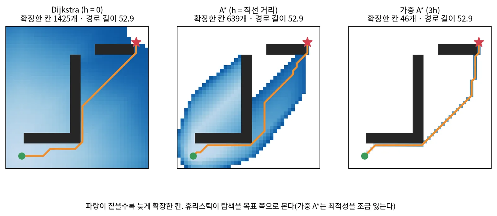
1 · 장단점
격자 탐색은 보장이 강하지만 차원이 늘면 칸 수가 폭발한다
| 방법 | 보장 | 장점 | 단점 |
|---|---|---|---|
| Dijkstra | 최적 | 모든 칸의 cost-to-go를 한 번에 | 목표 방향을 모르고 넓게 퍼진다 |
| A* | admissible h면 최적 | 적게 확장, 구현 쉬움 | h가 나쁘면 Dijkstra와 같아진다 |
| 가중 A* | 최적의 w배 이내 | 훨씬 빠르다 | 최적성을 잃는다 |
| D* Lite | 최적(재계획) | 지도가 바뀐 부분만 다시 계산 | 구현이 복잡하다 |
격자 탐색은 "그 해상도에서 길이 있으면 찾는다". 좁은 통로가 칸보다 작으면 못 찾는다.
축마다 100칸이면 2차원은 10⁴, 6관절 팔은 10¹²칸이다. 그래서 고차원은 샘플링으로 간다.
1 · 기구학을 넣은 탐색
Hybrid A*와 상태 격자는 "로봇이 실제로 그릴 수 있는 곡선"으로 탐색한다
칸마다 연속 자세 \((x, y, \theta)\)를 붙인다
최소 회전 반경의 호로 다음 자세를 만들고, 칸 단위로 중복을 지운다. 끝은 Reeds–Shepp 곡선으로 붙인다.
장점 차처럼 옆으로 못 가는 로봇의 주차·후진. 단점 최적성 보장이 약하다.
미리 계산한 motion primitive를 잇는다
정해진 자세 집합 사이를 잇는 실행 가능한 곡선을 오프라인으로 만들어 둔다.
장점 결과가 바로 실행 가능. 단점 결과가 primitive 집합의 설계에 의존한다.

Dolgov 외, Hybrid A* (2008–10) · Pivtoraiko·Kelly, State lattice (2009) · Macenski 외, Smac Planner arXiv:2401.13078
1 · 샘플링 기반 계획
RRT는 트리를 키우고, PRM은 roadmap을 미리 만든다
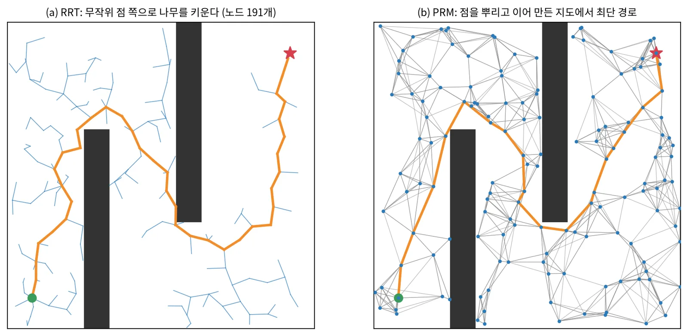
한 번의 질의에 빠르다. 확률적 완전(시간이 충분하면 찾는다). 경로가 구불구불하다.
새 점을 이을 때 이웃을 다시 연결해 비용을 줄인다. 점근적 최적(점이 무한하면 최적).
roadmap을 한 번 만들면 여러 질의에 다시 쓴다. 환경이 바뀌면 다시 만든다.
LaValle, RRT (1998) · Kavraki 외, PRM (1996) · Karaman·Frazzoli, RRT*·PRM* (IJRR 2011)
1 · 장단점
탐색은 정확하고, 샘플링은 고차원에 강하고, 최적화는 매끄럽다
| 격자·그래프 탐색 | 샘플링(RRT·PRM) | 궤적 최적화(2장) | |
|---|---|---|---|
| 잘 맞는 차원 | 2–4 | 4 이상(팔, 다관절) | 어디든(국소적) |
| 보장 | 해상도 완전, 최적 | 확률적 완전, 점근적 최적 | 국소 최적, 초기값에 의존 |
| 결과 모양 | 꺾인 선(후처리 필요) | 구불구불 | 매끄럽고 시간 정보 포함 |
| 속도 | 칸 수에 비례 | 좁은 통로에서 느림 | 반복 몇 번이면 수렴 |
| 흔한 쓰임 | 바퀴 로봇 전역 경로 | 팔·다관절 운동 계획 | 로컬 궤적, 후처리 |
실무: 탐색이나 샘플링으로 대략의 경로를 찾고, 최적화로 매끄럽게 만들고, 제어기가 따라간다.
2 · 로컬 계획과 궤적 최적화
앞으로 몇 초의 궤적을
로봇이 실제로 따라갈 수 있게 만든다
속도 후보를 시뮬레이션해 고르거나, 궤적 전체를 비용의 gradient로 최적화한다.
2 · Dynamic Window Approach
DWA는 지금 닿을 수 있는 속도 후보만 시뮬레이션해 점수로 고른다
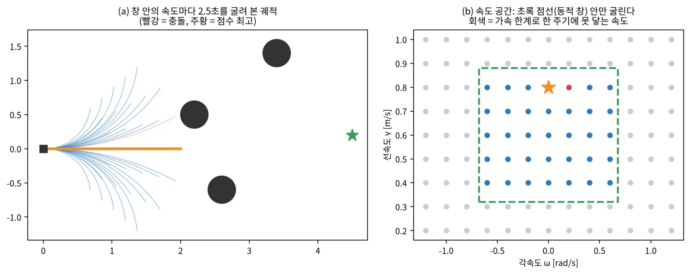
가속 한계를 구조로 지킨다. 계산이 가볍고 이해하기 쉽다. 새 장애물에 즉시 반응한다.
후보가 "일정 속도의 호"뿐이라 멀리 보지 못한다. U자 막다른 곳에 갇힌다. 점수 가중치 조정이 필요하다.
Fox·Burgard·Thrun, The Dynamic Window Approach to Collision Avoidance, IEEE RAM 1997
2 · 궤적 최적화
궤적 최적화는 경로 전체를 비용의 gradient로 밀어내고 편다

거리장의 gradient로 궤적 전체를 공변 경사 하강
충돌을 부호 거리 제약으로 두고 순차 볼록 최적화
시간 간격까지 변수로 둔 희소 최적화(로컬 계획)
Ratliff 외, CHOMP (ICRA 2009) · Schulman 외, TrajOpt (RSS 2013) · Rösmann 외, TEB (RAS 2017)
2 · 장단점
로컬 Planner는 "얼마나 멀리, 얼마나 정확히"를 계산량과 맞바꾼다
| 방법 | 후보 | 장점 | 단점 |
|---|---|---|---|
| DWA | 일정 속도 호 | 가볍고 가속 한계를 지킨다 | 근시안, 막다른 곳 |
| TEB | 시간 간격 궤적 최적화 | 매끄럽고 후진·회전도 계획 | 파라미터 많고 국소 최적 |
| MPC | 모델 위 최적 제어열 | 제약을 정확히 건다 | 비볼록 장애물에서 느리고 국소 최적 |
| MPPI | 무작위 제어열 수백 개 | 미분 불가 비용도, 병렬 | 샘플 수·온도에 민감 |
| 학습 Planner | 네트워크가 내는 궤적 | 센서에서 바로, 빠르다 | 분포 밖에서 보장 없음 |
표준 조합: 전역 A* + 로컬 DWA/TEB/MPPI(ROS 2 Nav2의 기본 구성과 같다).
3 · 학습 Planner
한 답을 회귀하던 Planner가
후보를 내고 고르는 쪽으로 옮겨 갔다
회귀는 빠르지만, 갈림길에서 두 답의 평균이 장애물로 들어간다.
3 · 왜 배우나
학습 Planner는 지도 만들기와 비용 설계를 데이터로 대신한다
- 센서에서 바로 — 깊이·영상에서 궤적까지, 손으로 만든 지도 단계를 줄인다
- 빠르다 — 네트워크 한 번의 추론, 탐색이 필요 없다
- 의미 — 풀밭·보도·계단처럼 기하로 안 보이는 것을 배운다
- 보장 — 충돌이 없다거나 최적이라는 증명이 없다
- 분포 밖 — 처음 보는 장면에서 조용히 틀린다
- 데이터 — 시연·시뮬·라벨을 모으는 비용
| 학습 신호 | 예 | 특징 |
|---|---|---|
| 시연 모방 | 사람 원격조종, 고전 Planner 출력 | 쉽지만 시연자 한계, 분포 이동 |
| costmap 자기지도 | iPlanner, ViPlanner | 라벨 없이 비용 gradient로 |
| 폐루프 강화학습 | X-NavDP, S2E | 시뮬의 폐루프 결과로 fine-tuning한다 |
3 · 시연으로 배우기
고전 Planner를 교사로 쓰면 시연은 공짜지만, 학생은 가 본 상태만 안다
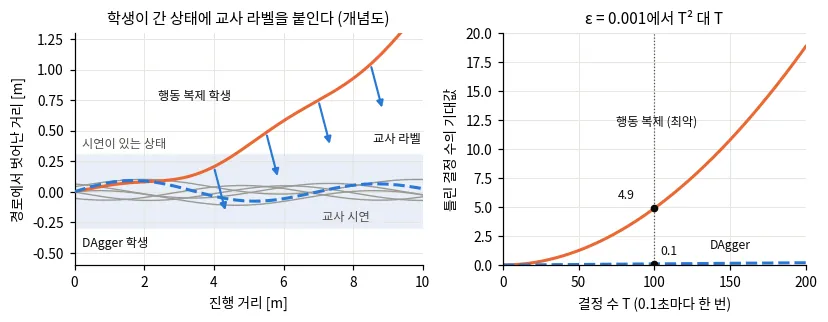
교사(A*, MPPI 등)를 시뮬에서 돌리면 시연이 무한히 나온다. 지도학습이라 안정적이다.
교사보다 나아질 수 없다. 교사가 상태마다 답 하나만 주면 갈림길의 다른 답을 배우지 못한다.
3 · costmap 자기지도
라벨 없이 costmap의 gradient만으로 경로를 배울 수 있다

예측 경로점에서 ESDF 비용을 쌍선형으로 읽어 손실로 쓴다. 약 4배 빠르고 SPL 26–87% 향상
의미 클래스 30개의 비용을 더했다. traversability 비용 38.02% 감소
시연이 필요 없다. costmap을 바꾸면 성격이 바뀐다.
costmap의 국소 gradient만 보므로 국소 최적에 빠진다. 답이 하나라 갈림길에 약하다.
iPlanner arXiv:2302.11434, RSS 2023 · ViPlanner arXiv:2310.00982, ICRA 2024 (ETH RSL)
3 · 다봉(multimodal) 문제
왼쪽과 오른쪽이 모두 정답이면, 회귀는 그 평균인 장애물 한가운데를 낸다
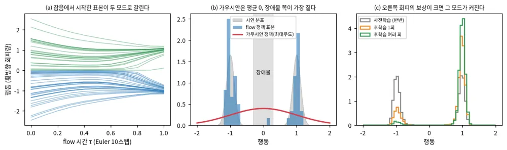
조건부 평균을 배운다. 모드가 둘이면 틀린다.
anchor 궤적 K개 중 고르거나 가우시안 혼합. 모드 수를 미리 정한다.
diffusion·flow는 분포 전체를 배워 샘플을 여럿 낸다.
3 · 장단점
학습 신호마다 얻는 것과 치르는 것이 다르다
| 방식 | 장점 | 단점 |
|---|---|---|
| 회귀 모방(BC) | 가장 쉽고 빠르다 | 다봉 평균, 분포 이동, 교사 한계 |
| costmap 자기지도 | 라벨 불필요, 비용을 바꿔 성격 조정 | 국소 최적, 답 하나 |
| 생성 모델 + critic | 여러 모드, 생성과 선택 분리 | critic의 일반화가 관건, 계산 증가 |
| 폐루프 RL 후학습 | 시연을 넘는다, 실제 결과로 배운다 | 시뮬과 보상 설계 필요, 불안정할 수 있다 |
최근 흐름: 모방으로 시작 → 생성 모델로 후보 여럿 → critic·규칙·RL로 고르거나 fine-tuning한다.
4 · 생성형 궤적
궤적 전체를 생성 모델에서 뽑고,
여럿 중 하나를 고른다
공통점은 셋이다. 궤적을 한 번에 만들고, 여러 모드를 담고, 비용이나 목표로 생성을 유도한다.
4 · 배경지식 · flow matching
생성 모델은 잡음을 데이터로 옮기는 길을 배운다
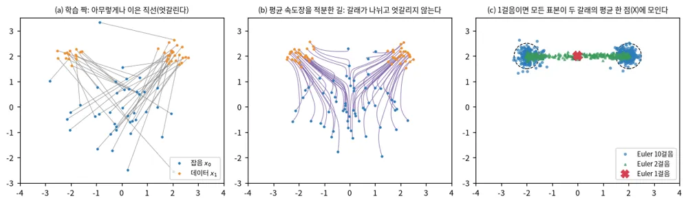
데이터에 잡음을 조금씩 더하는 과정을 거꾸로 배운다. 보통 수십 스텝을 되돌린다.
잡음→데이터의 속도장을 회귀로 배운다. 길이 곧아 적은 스텝으로도 된다.
4 · guidance
생성 도중 비용의 gradient를 더하면 재학습 없이 샘플을 원하는 쪽으로 민다
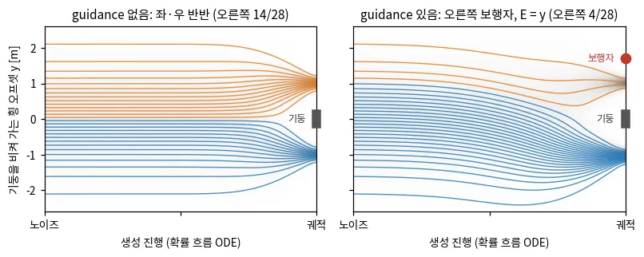
학습 뒤 새 제약(보행자, 금지 구역)을 넣을 수 있다. 다봉성은 유지된다.
비용이 미분 가능해야 한다. 세기 η가 크면 샘플이 데이터 분포 밖으로 밀려 이상해진다.
4 · 계보
Diffuser에서 GoalFlow까지 바뀐 것은 조건, 시작점, 스텝 수다
| 연도 | 이름 | 바꾼 것 |
|---|---|---|
| 2022 | Diffuser | 궤적 전체를 diffusion으로, 보상 gradient guidance |
| 2023 | Diffusion Policy | 관측 조건 행동 열, receding horizon |
| 2023 | MPD | diffusion prior × 비용 likelihood 사후 샘플 |
| 2024 | π0 | VLM에 flow matching 행동 전문가 |
| 2024 | DiffusionDrive | anchor에서 시작, 2스텝 |
| 2025 | Diffusion Planner | 예측과 계획을 함께 생성 |
| 2025 | GoalFlow | 목표점 먼저, flow matching 1스텝 |

Diffuser arXiv:2205.09991, ICML 2022 · Diffusion Policy arXiv:2303.04137, RSS 2023 · GoalFlow arXiv:2503.05689, CVPR 2025
4 · Diffusion Planner
Diffusion Planner는 자기 궤적과 이웃의 미래를 한 번에 생성한다
- 8초 × 10 Hz = 80스텝 궤적, 20 Hz로 다시 계획
- 이웃 10대의 미래를 자기 궤적과 한 텐서로 denoise
- 차선 경로를 조건으로 받는다
- 실행 중 제약은 재학습 없는 guidance로
- 기구학은 보장하지 않고 LQR 추종기에 맡긴다
nuPlan Test14-hard
75.99 (규칙 기반 PDM-Closed 65.08)
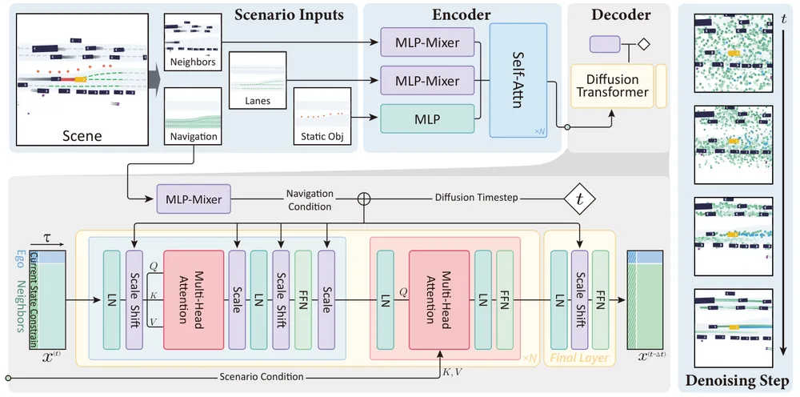
설계 질문: 실행 가능성(기구학)을 생성기 안에서 보장할 것인가, 뒤의 추종기에 맡길 것인가.
Zheng 외, Diffusion-Based Planning for Autonomous Driving with Flexible Guidance, arXiv:2501.15564, ICLR 2025
4 · 스텝 수 줄이기
스텝을 줄이는 길은 적분기, 시작점, 증류의 셋이고 증류는 다양성을 잃는다
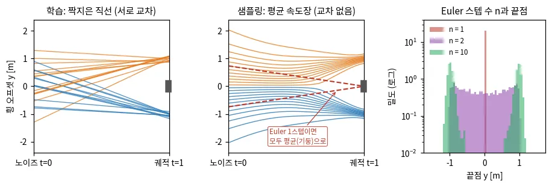
고차 solver
DPM-Solver++ 같은 solver로 10스텝 안팎. 장점 재학습 불필요. 단점 줄이는 데 한계.
anchor에서 출발
잡음 대신 대표 궤적 근처에서 시작해 2스텝(DiffusionDrive). 단점 anchor 설계가 필요.
1스텝 학생 네트워크
여러 스텝 교사를 흉내 내는 1스텝 네트워크. 단점 다양성을 잃기 쉽다.
4 · 생성하고 고르기
생성기는 후보를 넓게 내고, 고르는 일은 다른 무엇이 맡는다
조건
지도·센서
목표점, 현재 속도
→
생성
diffusion · flow
후보 K개
→
rollout·검증
동역학 모델로 rollout해
제약 위반 거르기
→
선택
규칙 점수 · 학습 critic
· 느린 VLM
→
출력
시간 붙은 궤적
→ 제어기
| 고르는 것 | 예 | 장점 | 단점 |
|---|---|---|---|
| 규칙 점수 | 비용·충돌·진행 가중합 | 해석 쉬움, 안전 규칙 직접 | 가중치 손 조정 |
| 학습 critic | NavDP, X-NavDP | 폐루프 결과를 배운다 | 데이터 분포 밖 과대평가 |
| 느린 VLM | Slow Brain, VAMOS | 의미·상식을 쓴다 | 수 초 지연 |
4 · 장단점
생성형 Planner는 여러 해를 얻는 대신 계산과 선택 문제를 떠안는다
- 갈림길에서 평균을 내지 않는다(다봉)
- 궤적 전체를 한 번에 — 시간 정보와 매끄러움
- guidance로 학습 뒤 조건 추가
- 후보 여럿이라 안전 검사·폴백과 조합하기 쉽다
- 스텝 수만큼 추론이 느리다
- 후보 K개를 rollout하고 채점하는 계산
- 좋은 후보가 없으면 고를 것도 없다(교사가 한 답만 주면 다양성이 약하다)
- 실행 가능성은 따로 보장해야 한다
| 회귀 Planner | 생성형 Planner | |
|---|---|---|
| 답의 수 | 하나, 갈림길에서 평균 | 여럿을 뽑고 고른다 |
| 추론 | 네트워크 한 번 | 스텝 수 × K |
| 학습 | 단순 회귀 | 회귀(flow) 또는 잡음 예측(diffusion) |
5 · 위층, 위험, 규칙
느린 모델은 위에서 목표를 정하고,
위험과 규칙은 선택에 남는다
VLA는 Planner를 대체하지 않는다. 위험은 칸 하나의 비용에서 방향·추종 능력·꼬리로 넓어진다.
5 · VLA는 위층에
의미 계획과 몸체 판단을 두 모델로 나누자 실제 코스에서 90%가 됐다
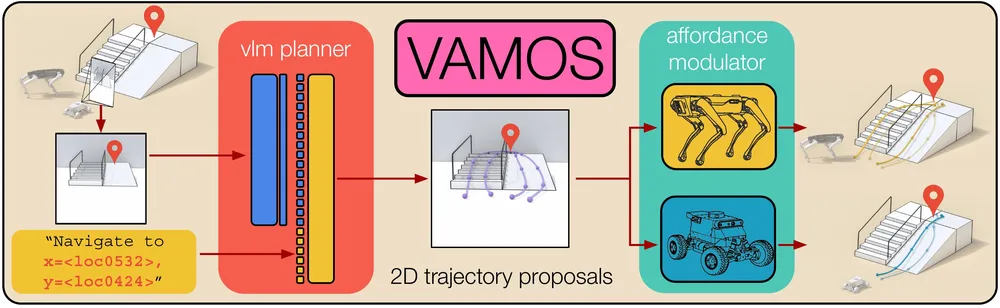
| 코스 6곳 × 5회 | 성공률 |
|---|---|
| VAMOS(층 분리) | 90% |
| ViPlanner · 모듈식 스택 | 67% · 53% |
| NoMaD · NaVILA(단일 모델) | 27% · 10% |
"어디로"에 상식·언어를 쓴다. 몸체가 바뀌면 아래층만 바꾼다.
VLM은 기하 이해가 약하고 느리다. 아래층 없이 쓰면 충돌이 잦다.
VAMOS arXiv:2510.20818 · Can Vision Foundation Models Navigate? arXiv:2603.25937 · NaVILA arXiv:2412.04453, RSS 2025
5 · 느린 판정자
늦게 오는 VLM 답은 그대로 따르지 말고 Planner 점수에 섞는다
- 빠른 Planner가 후보 64개를 5 Hz로 낸다
- VLM 왕복 지연은 중앙값 2.7초
- 늦은 답은 현재 좌표로 옮겨 가중한다
- 5초가 넘으면 보수적 폴백
| 4륜 배달로봇, 보도 5경로 | 100 m당 개입 |
|---|---|
| Planner만 | 3.49 |
| VLM 답을 그대로 따르기 | 8.15 |
| Score Fusion | 1.31 |
| Probability Fusion | 0.87 |
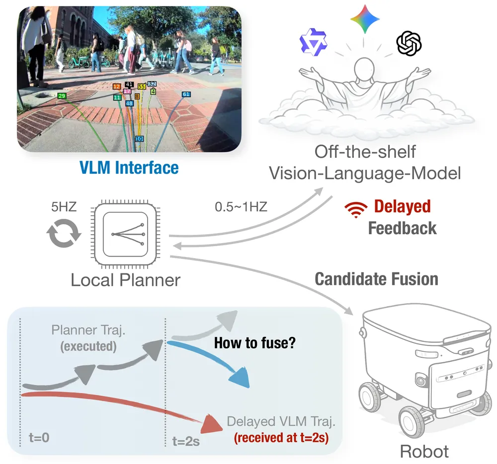
핵심: 주기가 다른 두 모듈을 이을 때는 "늦은 신호를 어떻게 현재로 옮기고, 언제 버릴지"를 정해야 한다.
Slow Brain, Fast Planner, arXiv:2606.20458, 2026-06
5 · 위험을 세는 법
평균 비용이 낮은 경로와 최악 구간이 안전한 경로는 다르다

칸 비용을 더한다. 단순하지만 짧고 위험한 구간을 가린다.
가장 나쁜 구간을 본다. 보수적이고 이상치에 민감하다.
"충돌 확률 ≤ δ"를 건다. 불확실성 추정이 맞아야 한다.
5 · 실행 가능성 학습
제어기가 실제로 따라간 정도를 배워 그래프 간선 비용으로 쓴다
- 지형별 보행 정책마다 실행 가능성 네트워크(Feasibility-Net)
- 입력: 높이 지도 조각, 속도 명령
- 라벨: rollout의 속도 추종 보상
- 8방향 텐서를 Dijkstra 간선 비용으로
- 혼합 지형: 시뮬 98.60%, 실물 A1 70%
비용이 "이 로봇이 이 방향으로 실제로 갈 수 있나"를 잰다.
제어기가 바뀌면 다시 배운다. 라벨을 모으는 시뮬 비용.
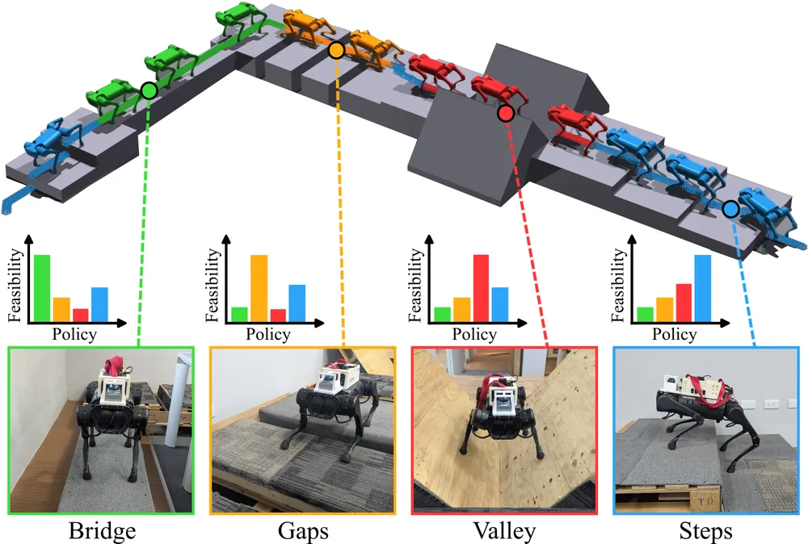
Feasibility-Guided Planning, arXiv:2602.07932, 2026-02
5 · 위험의 다른 자리
방향, 센서 밖, 차체 자세, 덧붙이는 안전 층이 칸 비용을 보완한다
간선이 경사면의 종·횡 방향을 담는다. 같은 땅도 지나가는 방향에 따라 값이 다르다.
보이지 않는 지형을 flow matching으로 상상해 계획한다. 시뮬 Maze(Hard) 83.1%.
가림으로 생긴 높이 분산을 차체 자세까지 전파한다. 항을 빼면 실패율 18.9% → 34.4%.
학습 정책의 궤적을 척력장으로 밀어낸다. 재학습 없이 덧붙인다.
핵심: 위험의 단위가 "칸"에서 "방향·자세·추종 능력"으로 넓어지고 있다. 다만 칸 비용과 직접 견준 연구는 아직 적다.
TRG-planner arXiv:2501.01806 · DreamFlow arXiv:2603.02976 · Occlusion-Aware arXiv:2609.39105 · CARE arXiv:2506.03834
5 · 규칙 기준선
규칙 후보 15개를 시뮬레이션해 고른 PDM-Closed가 학습 Planner를 이겼다
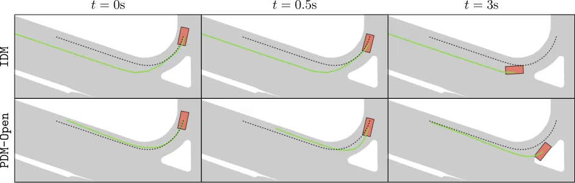
- IDM 속도 5 × 횡 오프셋 3 = 후보 15개
- LQR + 자전거 모델로 4초 시뮬레이션
- 규칙·진행·편안함 점수로 하나를 고른다
개루프로 잘 맞히는 Planner가 폐루프에서도 잘하는 것은 아니다. 학습 Planner는 강한 규칙 기준선과 견줘야 한다.
Dauner 외, Parting with Misconceptions about Learning-based Vehicle Motion Planning (PDM), arXiv:2306.07962, CoRL 2023 — nuPlan 2023 계획 챌린지 우승
5 · 규칙의 자리
학습 Planner는 규칙을 없앤 것이 아니라 규칙의 자리를 옮겼다
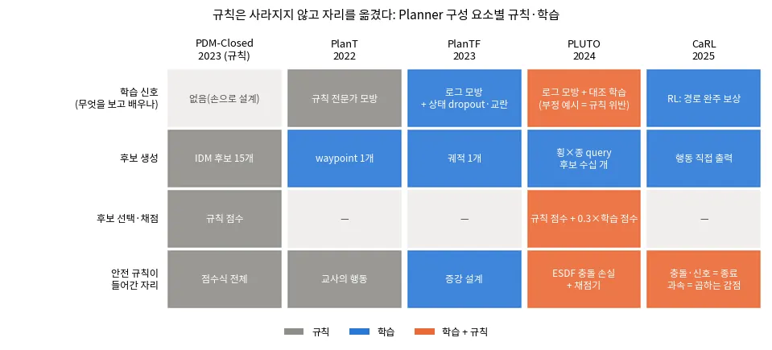
PlanT · 2022
규칙은 교사
→
PlanTF · 2024
지름길 막는 설계
→
PLUTO · 2024
후보 scorer
→
CaRL · 2025
보상·종료 조건
PlanT arXiv:2210.14222 · PlanTF arXiv:2309.10443 · PLUTO arXiv:2404.14327 · CaRL arXiv:2504.17838
6 · 정리
정확함, 속도, 다양성, 보장 사이에서
층마다 다른 답을 고른다
방법별 장단점 표, 평가하는 법, 공부 순서.
6 · 장단점 표
Planner 계열을 한 표로 정리한다
| 계열 | 대표 | 장점 | 단점 | 언제 |
|---|---|---|---|---|
| 격자 탐색 | Dijkstra, A*, D* Lite | 최적·완전, 단순 | 고차원 폭발, 꺾인 경로 | 2D 전역 경로 |
| 기구학 탐색 | Hybrid A*, 상태 격자 | 바로 실행 가능 | 설계·계산 부담 | 차, 주차 |
| 샘플링 | RRT(*), PRM | 고차원, 충돌 검사만 | 구불구불, 좁은 통로 | 로봇 팔 |
| 로컬 샘플링 | DWA, MPPI | 반응 빠름, 한계 준수 | 근시안 | 로컬 회피 |
| 궤적 최적화 | CHOMP, TEB, MPC | 매끄럽고 제약 정확 | 국소 최적 | 후처리, 로컬 |
| 회귀 학습 | iPlanner, BC | 센서에서 바로, 빠름 | 다봉 평균, 분포 밖 | 단순 장면 |
| 생성 + 선택 | NavDP, GoalFlow | 여러 해, 안전 층과 조합 | 계산, 선택 문제 | 복잡한 장면 |
| VLA 위층 | VAMOS | 의미·언어 목표 | 느림, 기하 약함 | 임무 수준 |
6 · 평가
Planner는 개루프 점수가 아니라 폐루프 주행으로 평가한다
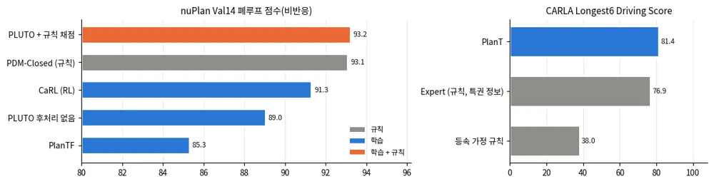
| 지표 | 재는 것 |
|---|---|
| 성공률(SR) | 목표에 닿은 비율 |
| SPL | 성공 × (최단 길이 / 실제 길이) |
| 충돌·개입 수 | 100 m당, 1시간당으로 정규화 |
| 계획 시간 | 평균과 꼬리(최댓값) |
개루프 오차(정답 궤적과의 거리)는 폐루프 성능을 잘 예측하지 못한다. seed 여러 개와 같은 조건의 짝 비교로 판단한다.
SPL: Anderson 외, On Evaluation of Embodied Navigation Agents, arXiv:1807.06757
6 · 공부 순서
교과서로 고전을, 구현으로 감을, 논문으로 학습 Planner를 익힌다
LaValle, Planning Algorithms (2006)
구성 공간, 이산 탐색, 샘플링, 미분 제약. 저자가 온라인에 공개했다.
작은 문제를 직접
격자 A* → RRT → DWA → 궤적 최적화(경로 후처리). 각각 수십–백 줄이면 된다.
생성 모델과 내비 논문
Diffusion Policy → flow matching → NavDP → GoalFlow·Diffusion Planner → VAMOS.
| 이 덱의 장 | 스스로 확인할 질문 |
|---|---|
| 1 탐색·샘플링 | A*가 최적이려면 h가 어떤 조건을 지켜야 하나? RRT와 RRT*의 차이는? |
| 2 로컬·최적화 | DWA는 왜 막다른 곳에 갇히나? 궤적 최적화의 초기값은 왜 중요한가? |
| 3 학습 | 회귀 Planner가 갈림길에서 장애물로 가는 이유는? |
| 4 생성 | 스텝을 1로 줄이면 왜 평균으로 돌아가나? guidance의 대가는? |
| 5 위층·위험 | 늦은 VLM 답을 그대로 따르면 왜 나빠지나? |
정리
계획은 층을 나누고, 후보를 만들고, 기준으로 고르는 일이다
층
임무 → 전역 → 로컬 → 제어. 위는 느리고 멀리, 아래는 빠르고 가까이.
표현
구성 공간과 costmap. 부풀린 장애물 위에서 로봇은 점이 된다.
고전
탐색은 정확, 샘플링은 고차원, 최적화는 매끄러움. 함께 쓴다.
학습
회귀는 다봉에서 실패한다. 생성 모델이 후보를 넓게 낸다.
선택
규칙·critic·VLM이 고른다. 안전 규칙은 선택에 남는다.
평가
폐루프, 여러 seed, 강한 규칙 기준선과 견준다.
참고문헌 1/2 · 먼저 읽을 것
처음에는 이 다섯 가지만 읽는다
| 순서 | 문헌 | 왜 먼저 읽나 |
|---|---|---|
| ★ 1 | LaValle, Planning Algorithms (Cambridge 2006) 2·4·5장 | 이산 탐색, 구성 공간, 샘플링을 한 책에서 |
| ★ 2 | Hart·Nilsson·Raphael, A* (IEEE Trans. SSC 1968) | 휴리스틱 탐색과 최적성 조건의 원 논문 |
| ★ 3 | LaValle, RRT (1998) · Karaman·Frazzoli, RRT* 1105.1186 | 샘플링 계획과 점근 최적성 |
| ★ 4 | Fox·Burgard·Thrun, DWA (IEEE RAM 1997) | 속도 공간의 로컬 계획, 지금도 기준선 |
| ★ 5 | Chi 외, Diffusion Policy 2303.04137 | 생성형 궤적 Planner의 출발점 |
참고문헌 2/2 · 장별
책과 원 논문
책 — LaValle, Planning Algorithms (2006)
탐색 — Dijkstra (1959) · A* (Hart 외 1968) · D* Lite (Koenig·Likhachev 2002) · Hybrid A* (Dolgov 외 2010) · State lattice (Pivtoraiko·Kelly 2009) · Smac Planner 2401.13078
샘플링 — PRM (Kavraki 외 1996) · RRT (LaValle 1998) · RRT* 1105.1186
로컬·최적화 — DWA (Fox 외 1997) · CHOMP (Ratliff 외 2009) · TrajOpt (Schulman 외 2013) · TEB (Rösmann 외 2017)
학습 — iPlanner 2302.11434 · ViPlanner 2310.00982 · NavDP 2505.08712 · X-NavDP 2607.28560
생성 — Diffuser 2205.09991 · Diffusion Policy 2303.04137 · Diffusion Planner 2501.15564 · GoalFlow 2503.05689
위층 — VAMOS 2510.20818 · NaVILA 2412.04453 · Can VFMs Navigate? 2603.25937 · Slow Brain 2606.20458
위험·실행 가능성 — Feasibility-Guided 2602.07932 · TRG 2501.01806 · DreamFlow 2603.02976 · Occlusion-Aware 2609.39105 · CARE 2506.03834
자율주행·평가 — PDM 2306.07962 · PlanT 2210.14222 · PlanTF 2309.10443 · PLUTO 2404.14327 · CaRL 2504.17838 · SPL 1807.06757